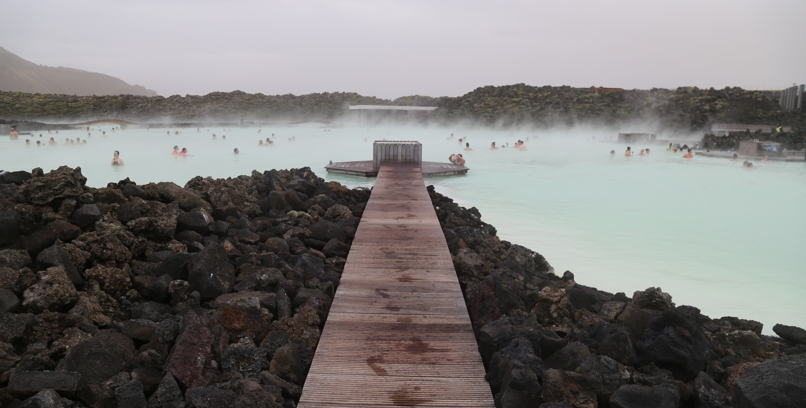
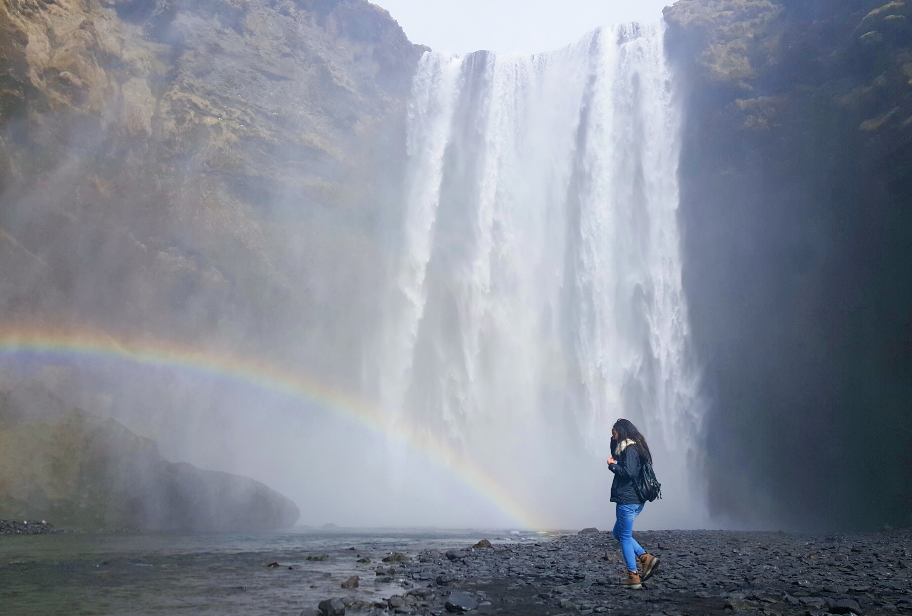
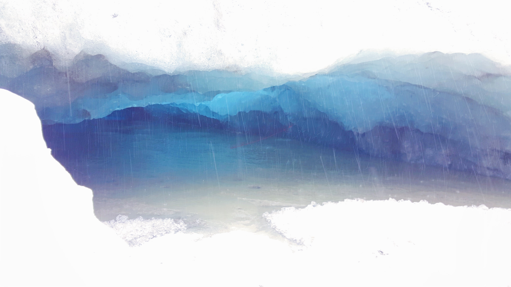

2016
2017
2018
2019
I visited Barcelona for 10 days in the summer of 2019. This was immediately after my summer internship had ended so I was more than ready for a vacation. I took this trip with my college friend and sophomore year roommate, Julie Deng.
We started off our trip a dinner in Poble Sec. This place is INCREDIBLY cheap! Tapas were 1 euro per dish, tacos were 1 euro per taco, and cocktails were 6-8 euros each! The streets are also quite lively, as all tapas bars had outdoor seating that most people prefer.
Our second day started off at Mercado de La Boqueria. This is the city's most famous outdoor food market. We booked a cooking class to cook paella, and this market was where we bought the ingredients. The cooking class itself was incredibly fun. We were able to meet about 10 other people from all over the world and all come together to cook one gigantic dish of paella (traditional Spanish rice dish). There were lots and lots of wine, which made the bonding and talking among everyone that much easier. While admittedly, I barely did anything to contribute to the cooking, as everyone all contributes to a singular dish, it was still a really fun experience that I would recommend to everyone. Plus, we got an amazing meal out of it!
After our cooking class, we walked about the market a bit more (it's pretty big!) and considered buying their fruit drinks (we ended up not buying any). We then walked around Las Ramblas, which was right next to the market. Las Ramblas is always very lively, with street performers, many shops, cool eateries, and just overall vibrant culture with so many people walking around. We bought all of our souvenirs here (pro tip: always bargain at souvenir shops)
Another amazing waterfall is the Seljalandsfoss waterfall. This one is skinnier than the Skogafoss waterfall, but the special thing about this one is that you can go behind the waterfall! Be prepared though, you'll definitely get quite drenched (not recommended if you have a cold, as the high winds around the waterfall mixed with getting drenched would not be good for you!)!
Now, earlier I mentioned how this trip was one of the most unfortunate trips I've had. This was
specifically due to two different events.
First, we tried going northern lights hunting the first night. To find these
magical lights, you have to drive out quite a bit to different spots with clearer skies, until you're lucky enough
to spot them. The one night we went though, it had apparently rained a bit earlier that day. Thus, the skies were not
clear enough to spot the lights with the naked eye. My dad's dslr camera was able to capture some greenness, but
we were not able to spot anything with our eyes. Out of our entire trip, there were only two days that saw rain. Our tour group itinerary
set one of those days to northern lights hunting.
The second day of rain, our tour group itinerary decided to go explore ice caves. I was so excited about this. I had spent hours on instagram looking at pictures of icelandic ice caves. They looked absolutely magnificent. However, the day we went, the rain poured HARD. All the ice caves flooded so we weren't able to ever go in one. We spent the day hiking on ice, getting drenched in the process as nobody had umbrellas. We all got drenched inside out, and was still unable to find any ice caves that weren't flooded. This was the best picture I was able to get. We were only able to peek into a cave from the sides.
Despite these scheduling mishaps, this was still an amazing trip I'll always remember. I've only glossed through a few of the many highlights. We were also able to see the Gulfoss waterfall, watch geysers erupt hot springs, visit the Reynisfjara black sand beach, walk between two continents at Þingvellir National Park, and wonder at giant glaciers.